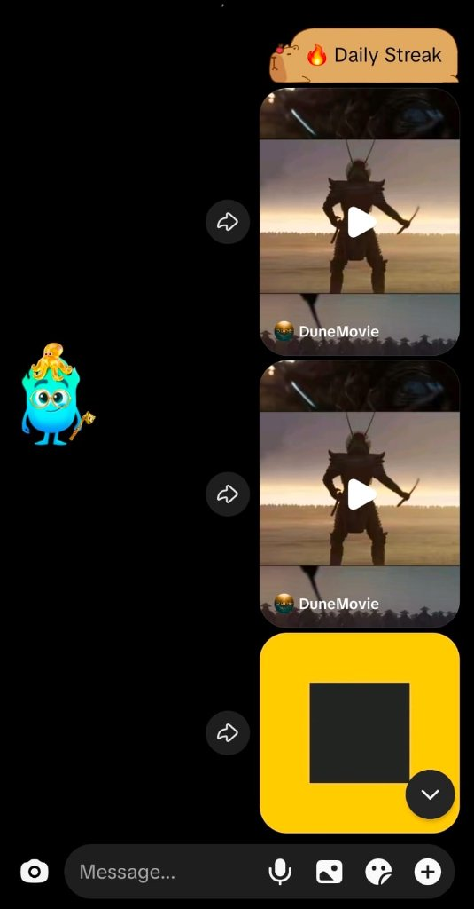
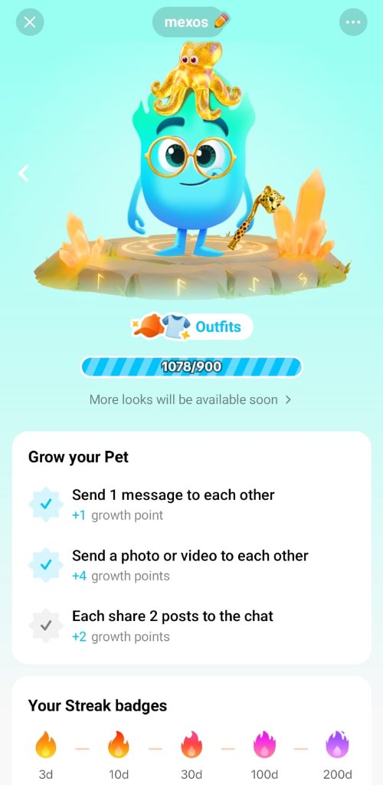
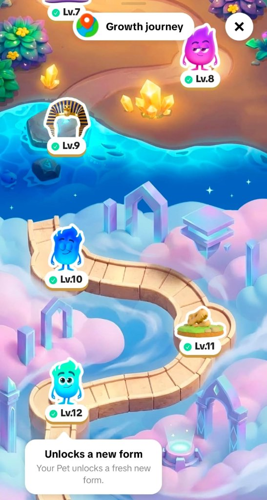
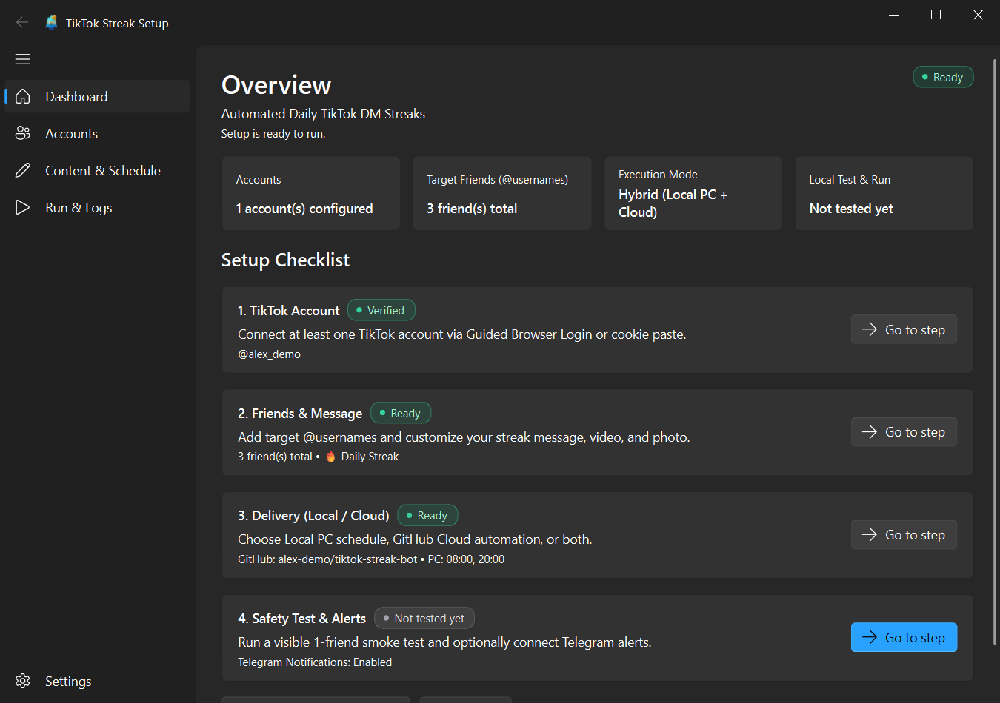
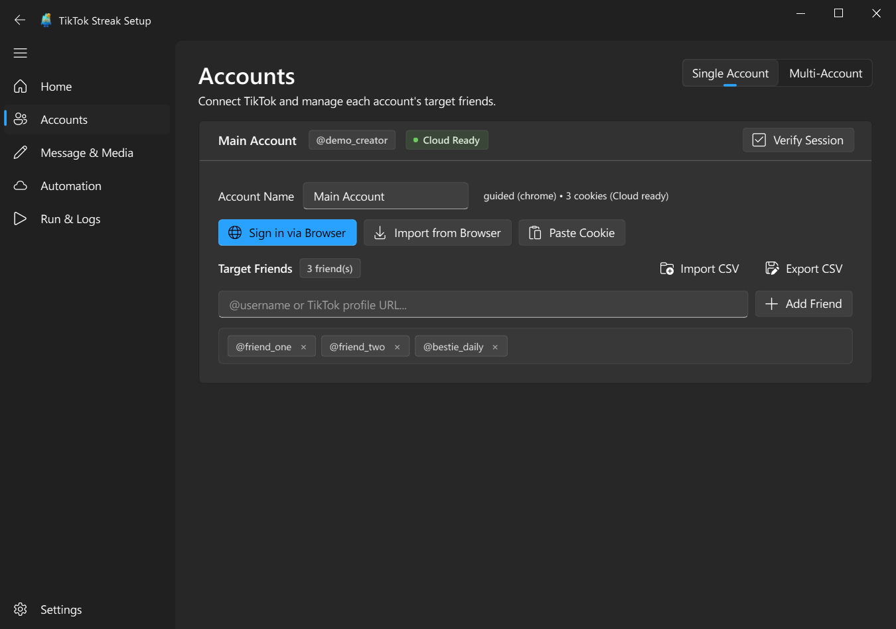
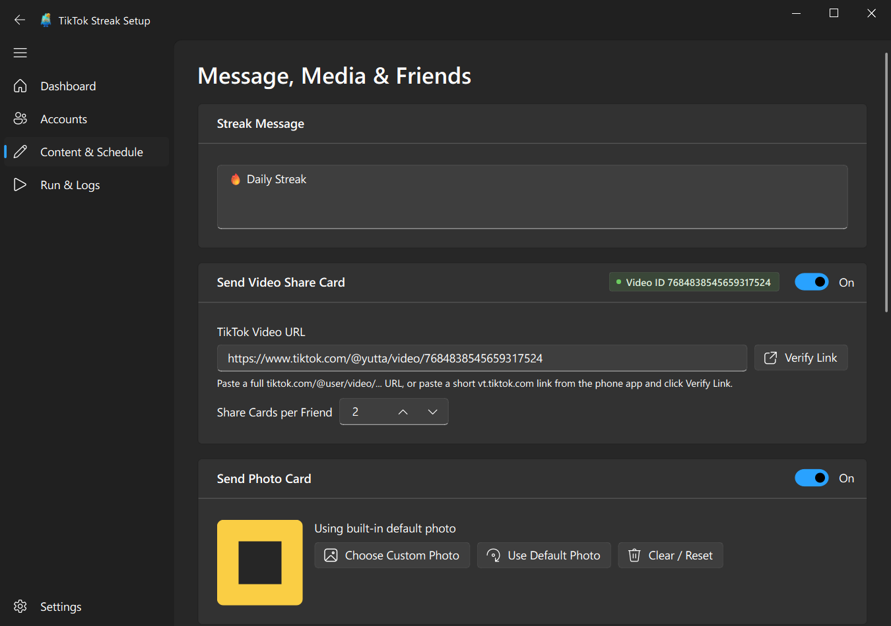
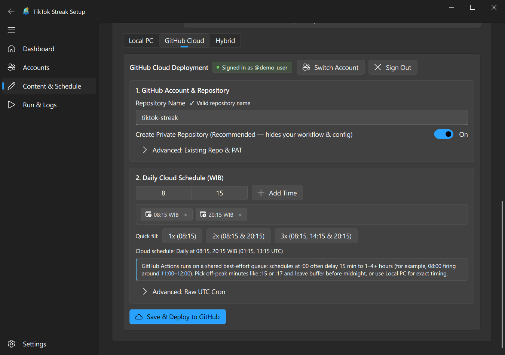
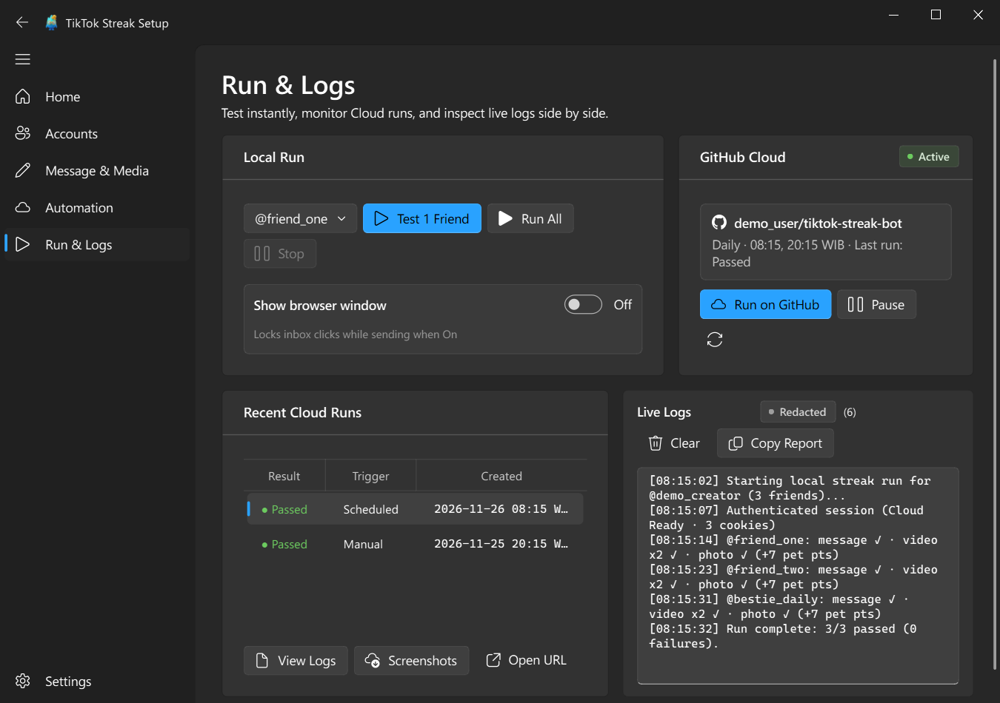
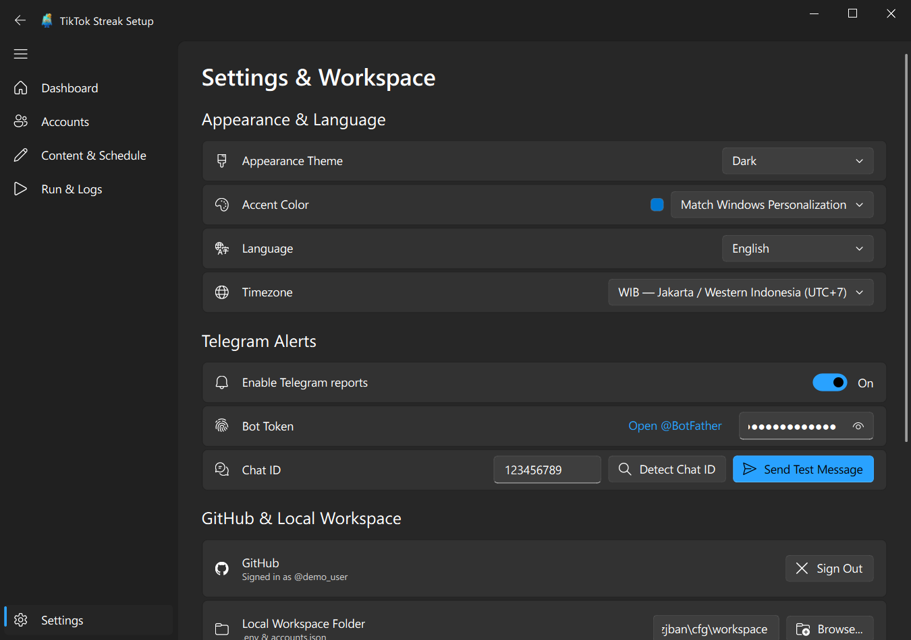

What Is TikTok Streak Auto?
|
In short, TikTok Streak Auto (distributed on Windows as TikTok Streak Setup) refers to an open-source, self-hosted automation tool built by alexanderfrit that keeps daily TikTok DM streaks alive and completes every daily Grow your Pet task automatically without renting a server.
|
Download Windows App & Source Code
|
Standalone Windows Executable (No Python Needed): Download TikTokStreakSetup.exe (v1.3.0) | All GitHub Releases | GitHub Source Repository
Build details: 90.6 MB · Standalone PyInstaller --noupx binary · Built transparently via GitHub Actions |
Execution Mode Comparison: Cloud vs. Local PC vs. Hybrid
Choose the delivery schedule that matches your uptime needs. According to the codebase architecture in gui/pages/content_page.py, all three modes share identical message templates, recipient verification, and media toggles.
| Execution Mode | Server Cost | PC Must Stay On? | Schedule Precision | Best Use Case |
|---|---|---|---|---|
| GitHub Cloud | $0 (free GitHub Actions) | No (runs 24/7 in your private repo) | Shared queue (15m to 1–4h delay at :00; pick :15/:17) |
Set-and-forget daily streaks while PC is asleep or off |
| Local PC | $0 (Windows Task Scheduler) | Yes during scheduled minutes | Exact minute (schtasks local trigger) |
Exact wall-clock timing or visible browser testing |
| Hybrid (Both) | $0 | Optional fallback | Exact PC trigger + cloud backup | Maximum reliability across laptop travel and downtime |
| Manual Daily DMs | $0 | Yes (manual phone/PC open) | 100% manual daily effort | Only practical for 1–2 friends with zero automation |
What It Sends & Daily Streak Pet Growth (+7 Points/Day)
By definition, Streak Pet growth tasks require specific daily interaction types beyond plain text. Sending all three customizable stages per friend satisfies every daily Grow your Pet milestone in one run:
| Stage Order | Payload Sent per Friend | Grow Your Pet Reward | How It Avoids Captchas & Misdelivery |
|---|---|---|---|
| 1. Text Streak | Custom text message (default: 🔥 Daily Streak) |
+1 growth point | Human-paced typing (0.04s–0.12s/char); verifies right-pane @username before typing and before Enter |
| 2. Video Share Cards | 2 shared TikTok video cards (aweType: 800) |
+2 growth points | Borrows in-page protobuf frame, re-signs X-Bogus via window.byted_acrawler.frontierSign inside /messages |
| 3. Photo Card | 1 default or custom photo image | +4 growth points | Captures hidden file input without OS file picker; verifies preview modal target and CommitImageUpload confirmation |
| Total Daily Gain | Text + 2 Video Cards + 1 Photo (each toggleable) | +7 points/day per friend | Fail-closed gate skips media immediately if text verification fails |
|
 1 text + 2 video cards + 1 photo per friend. |
 Completes all 3 checklist tasks automatically. |
 Unlocks levels, outfits, and new forms. |
Windows Desktop GUI Screenshots (v1.3.0)
Built natively on Windows with PySide6 and PySide6-Fluent-Widgets, syncing automatically with Windows Light/Dark themes and Windows Personalization accent colors (in English and Bahasa Indonesia).
|
 |
 |
|
 |
 |
|
 |
 |
Step-by-Step Setup Guide (Under 5 Minutes)
-
Download & Open: Download
TikTokStreakSetup.exe(v1.3.0) and double-click to launch. No ZIP extraction or Python install is required. On Windows SmartScreen, click More info → Run anyway (or inspect/build directly from source viabuild-exe.yml). -
Connect TikTok & Friends (Accounts Tab): Click Sign in via Browser (Recommended). Log into TikTok in the clean browser window, click Verify to confirm
/messagesworks and fetch regional Cloud routing cookies (tt-target-idc,store-idc), and add mutual friend@usernames(or importfriends.csv). -
Pick Message, Media & Cloud Schedule (Content & Schedule Tab): Customize text, video share URL (
vt.tiktok.comshort links supported), and photo. Sign in with 1-click GitHub OAuth Device Flow, keep Create Private Repository on, pick off-peak minutes such as:15or:17, review Detected Bot Repositories to avoid duplicate schedules, and click Save & Deploy to GitHub. - Run a 1-Friend Smoke Test (Run & Logs Tab): Select one friend, optionally toggle Show browser window (inbox sidebar clicks are automatically locked while running), and run Quick Test (1 Friend) before enabling full runs.
Interactive Timezone-to-UTC GitHub Actions Cron Calculator
GitHub Actions cron expressions always execute in UTC. Enter your desired local run times below to generate exact .github/workflows/streak.yml schedules (matches the desktop app conversion formula):
Converted 08:15, 20:15 to off-peak UTC GitHub Actions cron. |
Security, Privacy & Self-Audit
TikTok Streak Auto operates with 100% open-source transparency and 0% telemetry. No developer server ever receives your cookies, tokens, or friend lists.
- Local OS Encryption (
gui/services/storage.py): Plain settings go to%APPDATA%\TikTokStreak\config.json, while session cookies, GitHub OAuth tokens, and Telegram bot tokens are encrypted via Windows Credential Manager (keyring) or Windows DPAPI (secrets.dpapibound to your Windows user login). - Client-Side GitHub Secret Sealing (
gui/services/github_api.py): Secrets are encrypted on your PC using PyNaCl (SealedBox) with your own private repository's Actions public key before upload. - Automatic Log Redaction & Read-Only Cookie DBs: Browser imports use SQLite read-only mode (
?mode=ro) filtered strictly totiktok.com, andredact_secrets()strips tokens/cookies from UI logs and diagnostics. - 1-Click Reset: Use Settings → Reset All Settings & Secrets anytime to wipe config files, DPAPI secrets, and Credential Manager entries.
Exact Network Hosts Contacted
| Host | Module(s) | Exact Purpose |
|---|---|---|
*.tiktok.com (www, vt, vm) |
src/browser.py, src/share.py, gui/services/tiktok_auth.py, gui/services/validators.py |
Session verification, short-link resolution, and DM inbox message/media sending |
github.com, api.github.com |
gui/services/github_api.py, gui/services/updater.py |
OAuth Device Flow login, workflow deployment, run inspection (strips Authorization on log redirects), and SHA-256 verified app update checks |
api.telegram.org |
src/notifier.py, gui/services/github_api.py |
Optional Telegram run status alerts (only when enabled in Settings) |
Frequently Asked Questions |
How does TikTok Streak Auto run for free without a paid server or VPS?
In Cloud mode, the app deploys .github/workflows/streak.yml and encrypted secrets (PyNaCl SealedBox) into a private repository on your own GitHub account. GitHub Actions executes headless Chromium automatically on scheduled UTC cron times at $0/month.
Why does Chrome v20 encryption block cookie readers, and how does this app bypass it?
Chrome and Edge on Windows use App-Bound Encryption (v20), blocking external tools from reading encrypted cookie SQLite files from disk. Guided Browser Login opens your real installed browser without ChromeDriver or --enable-automation flags and collects active cookies over a one-shot Chrome DevTools Protocol WebSocket (Storage.getCookies) once /messages loads.
How does sending automated streaks level up a TikTok Streak Pet?
Delivering 1 text message (+1), 1 photo or video (+4), and 2 video share cards (+2) satisfies all three daily Grow your Pet checklist items per friend, earning +7 growth points/day automatically.
Is TikTok Streak Auto safe and private for cookies and tokens?
Yes. There is 0% telemetry and no external relay server. Local secrets are stored in Windows Credential Manager or Windows DPAPI (CryptProtectData), GitHub secrets are encrypted client-side before upload, and redact_secrets() strips credentials from all logs.
Can the bot accidentally send a streak message to the wrong friend?
Starting in v1.3.0, src/actions.py enforces strict right-pane @username header verification before typing, immediately before pressing Keys.RETURN, and before sending videos or photos (raising RecipientMismatchError on mismatch). It also resolves inbox threads across 3 exact tiers (skipping unread threads), isolates WS/HTTP templates per friend, and locks sidebar clicks while Show browser window is enabled.
Why do GitHub Actions schedules sometimes start 15 minutes to 4+ hours late?
GitHub Actions scheduled workflows share a best-effort cron queue across all repositories globally, causing severe congestion at top-of-hour marks such as :00. Pick off-peak minutes like :15 or :17 with buffer before midnight, or use Local PC Windows Task Scheduler for exact minute precision.
Does TikTok Streak Auto work without triggering captchas?
Yes. Never visiting public user profiles or video watch pages avoids common secsdk-captcha triggers. The automation navigates straight to https://www.tiktok.com/messages using stealth Chrome flags and exchanges share cards over the inbox's own signed socket/HTTP protocol.
How do I prevent duplicate messages if I deployed more than one bot repository?
In v1.3.0, Content & Schedule → Detected Bot Repositories scans your GitHub account for repositories containing .github/workflows/streak.yml. If two or more schedules are active, click Pause Others to pause duplicate repositories in one click, or manage schedules directly in Run & Logs.
Why does TikTok Business Suite block sending DM streaks?
Business TikTok accounts redirect /messages to Business Suite, where the personal web DM inbox and streak pet features are disabled. The app detects this redirect cleanly and raises InboxUnavailableError; switch to a standard personal TikTok account.
How do Windows EXE users receive updates in v1.3.0+?
Starting in v1.3.0, TikTok Streak Setup checks GitHub Releases on startup (or via Settings → About & Updates → Check for Updates), verifies the downloaded executable's PE header and SHA-256 digest, swaps TikTokStreakSetup.exe safely with backup rollback, and reminds you on the Dashboard if your Cloud workflow also needs a re-deploy.
Troubleshooting Matrix
| Issue / Exception | Root Cause | Verified Fix |
|---|---|---|
Chrome/Edge shows [v20] |
Windows App-Bound Encryption prevents reading SQLite cookie blobs externally | Use Sign in via Browser (Recommended) or Paste Cookie Manually |
SessionExpiredError |
Expired sessionid or manual cookie lacks regional Cloud routing cookies |
Click Verify on Accounts card to upgrade cookies, or re-sign in via Guided Browser Login |
InboxUnavailableError |
Account redirects /messages to TikTok Business Suite |
Use a personal TikTok account with standard DM inbox access |
RecipientMismatchError |
Active chat header did not match target @username |
Safeguard aborted send automatically; avoid clicking inbox rows during visible runs and verify spelling |
RateLimitError |
TikTok rate-limit toast detected during send burst | Stop runs for 24 hours for cooldown and set a lower Daily Friend Cap |
| Selector / Timeout Failure | Slow network load or UI state mismatch on runner | Open Run & Logs → Download Debug Artifacts to inspect failure screenshots |
Technical Architecture, CLI & Config Reference
- In-Page Protobuf &
frontierSign(src/share.py) - Hooks
window.WebSocketandfetch/XHR/v1/message/sendcalls inside/messageswith an inline protobuf codec, borrows emittedSEND_MESSAGEframes to craft video share cards (aweType: 800), refreshes message IDs, and re-signsX-Bogusviawindow.byted_acrawler.frontierSign. - 3-Tier Exact Thread Resolver & Header Guard (
src/actions.py) - Maps visible conversation rows to handles via React Fiber/DOM/network inspection, falls back to in-inbox search, scans only already-read threads safely, and locks headful sidebar clicks via
HEADFUL_GUARD_JS. - Zero-
gitGitHub Deployer (gui/services/github_api.py) - Bootstraps private repositories purely over GitHub REST Git Data API (
blobs → tree → commit → ref), seals secrets with PyNaCl, discovers existing bot workflows (discover_bot_repos()), pauses duplicate runs, and downloads job logs safely.
Run From Source & CLI Flags
git clone https://github.com/alexanderfrit/tiktok-streak.git
cd tiktok-streak
pip install -r requirements.txt -r requirements-gui.txt
python run_gui.py # Launch Windows Fluent GUI
python run_gui.py --smoke-test # Verify headless startup cleanly
python run_gui.py --run-bot --headful --only-friend user1 # Run using saved GUI secrets
python main.py --headful --only-friend friend_username_1 # Direct CLI 1-friend smoke test
python fetch_friends.py # Scrape mutual handles to friends.csv